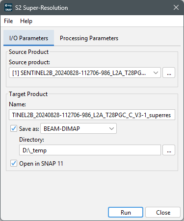
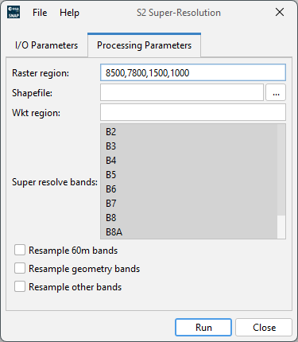

|
|
EOMasters Toolbox | |

This defines the source product on which the processing is performed. Supported are standard Sentinel-2 products of type L1C, L2A and L2A products provided by Theia.
Name - Used to specify the name of the target product. By default, it is set to the name of the source product with the suffix '_superres' appended.
Save as - Used to specify whether the target product should be saved to the file system. The dropdown list provides a list of available file formats. The text field shows the path to the directory where the processing result will be saved. You can edit the text field directly or select a directory via the '...' button.
Open in SNAP - Used to specify whether the target product should be opened in SNAP. If the target product is not saved, it is opened in SNAP automatically.

The specified region(s) will be used to select the pixels to be processed. Only one of pixelRegion, shapefile
and wktRegion must be specified: The specified region must not exceed a region of 4k square pixels.
To
super-resolve the images it needs surrounding pixels. Therefore, the processor might crop the specified region by 32
pixels if the region is to close to the edge of the image.
Raster region - Specifies the pixel region at 10m resolution to process. It should be in the format "{x},{y},{width},{height}" where:
Shapefile - This parameter specifies the path to an ESRI shapefile which defines the geographical region(s) of interest.
Wkt Region - This parameter specifies the geographical region of interest as a geometry in well-known text format (WKT).
Super resolve bands - Select the bands which shall be super-resolved. Allowed bands are 'B2', 'B3', 'B4', 'B5', 'B6', 'B7', 'B8', 'B8A', 'B11', 'B12'. For Theia L2A products the band names are mapped to the respective bands of the 'Surface_Reflectance' and the 'Flat_Reflectance' groups.
Resample 60 m bands - Whether the 60 m bands shall be included in the target product, up-scaled using a bi-cubic interpolation.
Resample geometry bands - Whether the view and sun geometry bands shall be included in the target product, up-scaled to the 5 m resolution. The view geometry bands will only be included for the spectral bands that are processed. This option is not working when using Theia L2A products and it needs original sized Sentinel-2 products.
Resample other bands - Whether to include other source bands, like B_opaque_clouds, B_cirrus_clouds, B_snow_and_ice_areas.